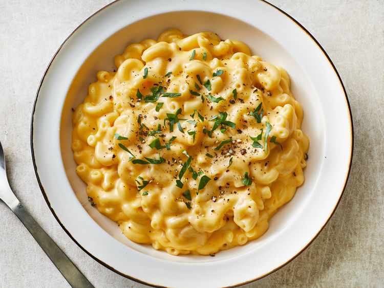

Ma And Cheese

Description
This is not my recipe for my other favorite dish, mac and cheese.
The original recipe is linked here.
Ingredients
- 8 ounces elbow macaroni
- 2 cups shredded sharp Cheddar cheese
- 1/2 cup grated Parmesan cheese
- 3 cups milk
- 1/4 cup butter
- 2 1/2 tablespoons all-purpose flour
- 2 tablespoons butter
- 1/2 cup bread crumbs
- 1 pinch paprika
Steps
- Cook macaroni according to the package directions. Drain.
- In a saucepan, melt butter or margarine over medium heat. Stir in enough flour to make a roux. Add milk to roux
slowly, stirring constantly. Stir in cheeses, and cook over low heat until cheese is melted and the sauce is a
little thick. Put macaroni in large casserole dish, and pour sauce over macaroni. Stir well.
- Melt butter or margarine in a skillet over medium heat. Add breadcrumbs and brown. Spread over the macaroni and
cheese to cover. Sprinkle with a little paprika.
- Bake at 350 degrees F (175 degrees C) for 30 minutes. Serve.